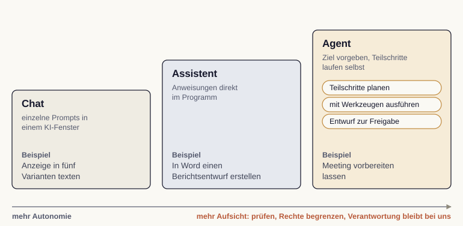

Modul 10: KI im Marketing
Bisher diente KI als eigenes Fenster für Prompts. Der nächste Schritt bringt sie direkt in die Programme des Alltags.
Microsoft Copilot etwa sitzt in Word, Excel, PowerPoint und Outlook und greift dort auf den Inhalt zu.
Ein externer Dienstleister ist hilfreich, aber jede Akte muss erst zugeschickt werden. Eine Assistenz am eigenen Schreibtisch sieht die Unterlagen direkt mit und arbeitet im Vorgang weiter.
Ein Assistent antwortet auf eine Anweisung. Ein Agent zerlegt ein Ziel selbst in Teilschritte und führt sie aus.
Statt “Schreibe diese E-Mail” lautet der Auftrag “Bereite das Meeting vor”: Termine prüfen, Informationen sammeln, Vorschlag erstellen.
| Stufe | Was wir tun | Beispiel |
|---|---|---|
| Chat | Einzelne Prompts in einem KI-Fenster | Eine Anzeige in fünf Varianten texten |
| Assistent | Anweisungen direkt im Programm | In Word einen Berichtsentwurf erstellen |
| Agent | Ein Ziel vorgeben, Teilschritte laufen selbst | Ein Meeting vorbereiten lassen |

Je eigenständiger ein Werkzeug handelt, desto wichtiger wird die Kontrolle.
Ein Agent kann auch selbstständig Fehler fortpflanzen. Ergebnisse prüfen, sensible Daten nur in freigegebene Werkzeuge, Verantwortung bleibt bei uns.
Quelle: Kumar et al. (2025)
Nicht jede Aufgabe braucht KI, und nicht jedes Werkzeug passt zu jeder Aufgabe.
Tragfähig wird ein Workflow durch feste Vorlagen und feste Prüfschritte.
Quelle: Bolz (2024)
Marketing beginnt beim Verständnis der Zielgruppe, führt über Ziele und Strategie zu Inhalten und Kanälen und endet bei der Messung. KI ist kein Endpunkt, sondern eine Schicht, die diesen ganzen Weg unterstützt.
Marketingbericht: freigegebene Daten lesen, Kennzahlen prüfen, Budgetvorschlag als Entwurf ablegen.
Kampagnenänderungen, Ausgaben und Nachrichten erst nach gesonderter Freigabe.
KI wandert vom Chat über den Assistenten bis zum Agenten in den Arbeitsalltag. Je mehr Autonomie, desto mehr Aufsicht. Die menschliche Rolle bleibt in jedem Modul dieselbe: Ziele setzen, Kontext liefern, Ergebnisse prüfen, Verantwortung tragen.
Jan Kirenz